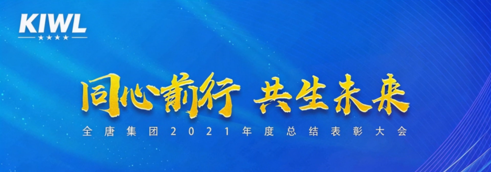
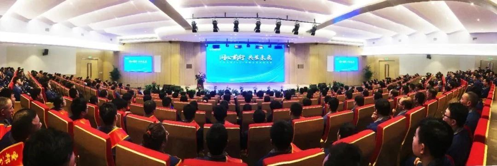

معًا نتقدم نحو مستقبل مشترك
مجموعة KIWL2021مؤتمر التكريم والتقييم السنوي

2 18بعد الظهر، عقدت شركة KIWL المحدودة2021حفل التلخيص والتكريم السنوي. حضر رئيس مجلس الإدارة جيانغ وي والمدير العام جيانغ هونغ وكبار الإدارة، وممثلو المجموعات والأفراد المتقدمين.
ألقى رئيس مجلس الإدارة جيانغ وي في الاجتماع كلمة رئيسية بعنوان «المضي قدماً بقلب واحد، والتعايش من أجل المستقبل». وأشار إلى أن，2021في عام، قادت KIWL بالثقافة، وحققت قفزة في بناء المنصات، وبناء منصات أفضل لجذب المواهب وتحفيزها والاحتفاظ بها؛ والتمسك بـ“نخلق قيمة للعملاء”الفلسفة، وتقديم منتجات وخدمات متميزة للعملاء دائمًا، وتحقيق التقدم المشترك مع الموظفين والعملاء، والتعايش المستقبلي.
أشار رئيس مجلس الإدارة جيانغ إلى2022نشر أعمال العام. وأشار إلى أن الشركة القابضة ينبغي أن تركز على التصميم العلوي، والتوجيه الاستراتيجي، ودمج الموارد، وتوسيع السلسلة الصناعية، وتحسين تخطيط مشروع التصنيع الذكي في شوتشو؛ والسعي لبحث التقنيات الأساسية لمعدات الهندسة والزراعة للطاقة الجديدة الخضراء وحلول أنظمة التحكم الكهروميكانيكية والهيدروليكية، بما يعزز التنمية عالية الجودة للمؤسسة..2022واصلت الشركة القابضة تقدم إصلاحات آلية الإدارة، وتنفيذ المؤسسية والتوحيد القياسي والإجرائية والمنهجية، والاعتماد على الأنظمة لإدارة الأفراد والعمليات، وتحقيق التحول في البناء المنهجي والحوكمة للشركة..
أكد رئيس مجلس الإدارة جيانغ وي في ختام كلمته，2022لا يزال يواجه سلسلة من التحديات، لكن التطلع إلى السوق يبشر بمستقبل واعد؛ ينبغي الاعتماد على الواقع والسير معًا، وأن تتعاون مجموعة KIWL مع الشركاء بشكل وثيق وبجهد مستمر، وتقوية الأساس، لخلق قيمة أكثر وأفضل وأعلى للعملاء والشركاء..
قدّم المدير العام جيانغ هونغ في الاجتماع تقرير عمل بعنوان «صناعة قوة الدفع، نحو المستقبل». وأشار إلى أنه في مواجهة2021في بيئة سوق متقلبة ومعقدة، توحد أفراد KIWL قواهم وتغلبوا على الصعوبات وسعوا نحو تقدم مستقر، وحققوا تطوير منتجات جديدة واختراقات سوقية جديدة؛ وتكاتفوا معتمدين التوجه نحو الفائدة، ورسّخوا أساس الأربعة توحيدات، وعززوا التصنيع الذكي؛ وركّزوا على جذب المواهب، وتخطيط الكوادر، وتدريب المهارات، وبناء الفرق، لدعم تطور الإدارة؛ وبذلوا جهدهم مع التركيز على الاستقرار والتحكم المزدوج، والإصرار على“صفر عيوب”，رقابة صارمة على الجودة، وتحسين شامل للإنتاج والجودة.
تطلعات2022أشار السيد جيانغ إلى ضرورة تنفيذ ضمان العمليات، ورفع الجودة، والابتكار والذكاء“ثلاث هجمات رئيسية”الإجراء؛ وترسيخ الأساسات الثلاثة لإدارة الرقابة والدمج الذكي وتنمية المواهب؛ وتعزيز التفكير الثلاثي المتمثل في النظام والرقمنة والابتكار؛ وغرس وعي التنافس والمسؤولية والالتزام؛ وبناء أنظمة الأهداف والعمل والتقييم الثلاثة، وانطلاق رحلة جديدة نحو المليون، وتحقيق الحلم والصعود مجددًا..
أكّد المدير العام جيانغ هونغ في الختام ضرورة الثبات والروح العالية، والاستمرار في الكفاح، وتحمّل المهمة الجديدة، والسير في مسار جديد، وبناء قوة الدفع، نحو المستقبل！
كرّم المؤتمر2021الموظفون المتميزون السنويون、“الموظفون المتميزون”الموظفون المتميزون والموظفون ذوو النزاهة、“ثلاثة وخمسة وثمانية”الموظفون المكرمون والحاصلون على“الابتكار ورفع الكفاءة”、“تحسين الجودة”、“براءة اختراع”تكريم المجموعات والأفراد المتفوقين الفائزين بالجائزة.
اختتم الاجتماع بحماسة مع غناء الجميع «أغنية وطن الحب».



واتساب

امسح الرمز
لتابعنا